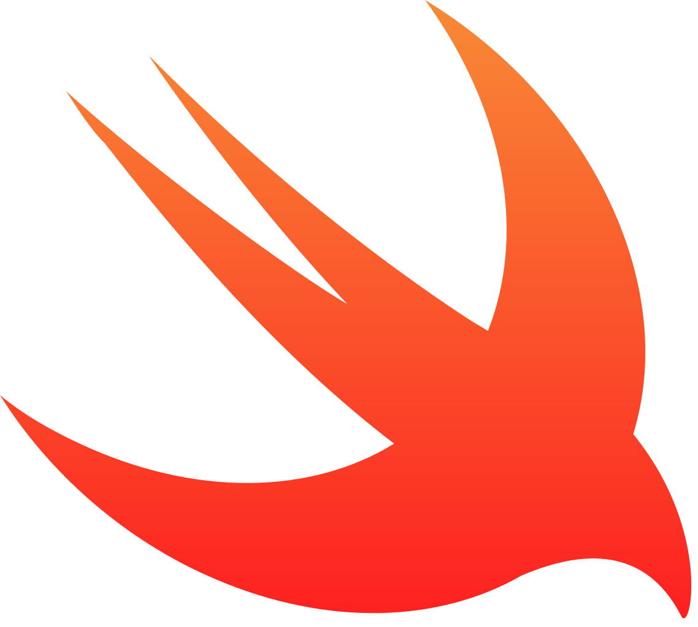
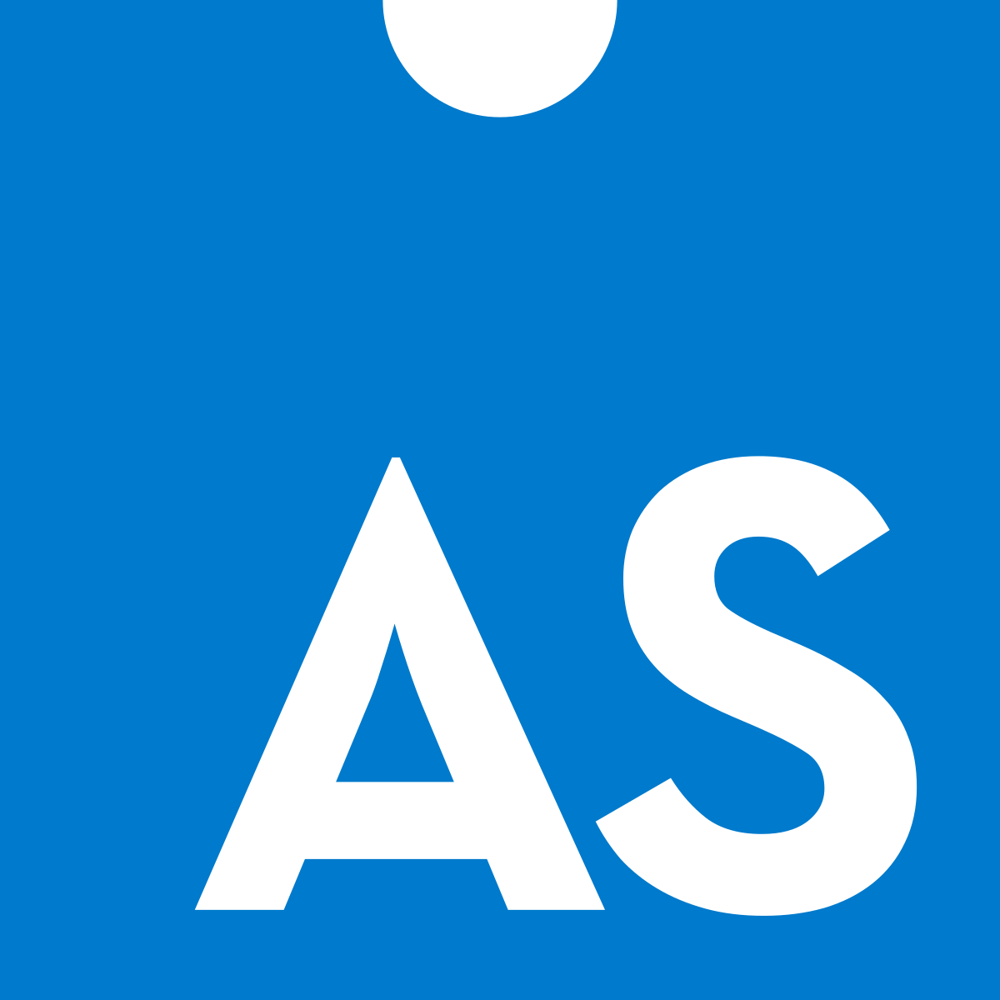
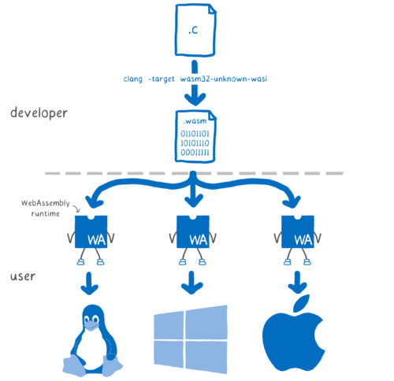
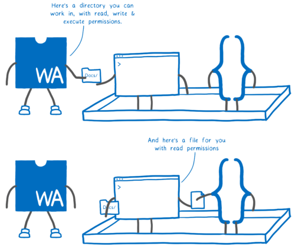
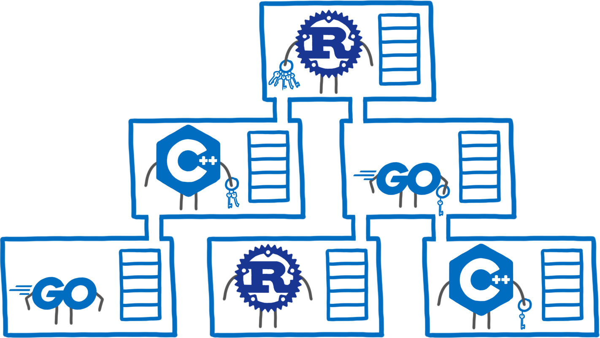

WebAssembly Developper Experience
Sébastien Deleuze - 2022
Definition
WebAssembly is a binary instruction format for a stack-based virtual machine.
WebAssembly is abbreviated Wasm.
Wasm is designed as a portable compilation target for programming languages, enabling deployment on the web (but not only) for client and server applications.
Characteristics
Efficiency
Compact format designed to be loaded efficiently.
Portability
Independent of CPU architecture, operating system or browser.
Speed
Close to native speed.
Security
Sandboxed execution with capability-based security and secured memory management.
Debuggable
The WAT text format allows to read, optimize or even write WebAssembly code by hand.
Open standard
Wasm is developed by a W3C Community Group via a collaboration involving many companies and individual contributors (1400+).
WebAssembly Deep dive

Host examples
- A browser
- A Javascript runtime
- A pure WebAssemby runtime
Writing code with WebAssembly text format
add.wat
(module
(func $add (param $a i32) (param $b i32) (result i32)
local.get $a
local.get $b
i32.add)
(export "add" (func $add))
)
add.js
WebAssembly.instantiateStreaming(fetch('add.wasm'))
.then(obj => {
console.log(obj.instance.exports.add(1, 2)); // "3"
});
Going further with WAT and Canvas
Based on https://github.com/binji/raw-wasm by Ben Smith
fire.html
<!DOCTYPE html>
<head>
<link rel="stylesheet" type="text/css" href="fire.css" media="screen" />
<script type="text/javascript" src="fire.js"></script>
</head>
<body>
<canvas width="320" height="168"></canvas>
</body>
fire.js
let imports = { '': { rand: Math.random } };
WebAssembly.instantiateStreaming(fetch('fire.wasm'), imports)
.then(results => {
let canvasData = new Uint8Array(results.instance.exports.mem.buffer, 53760, 215040);
let canvas = document.querySelector('canvas');
let context = canvas.getContext('2d');
let imageData = context.createImageData(320, 168);
let update = function () {
requestAnimationFrame(update);
results.instance.exports.run();
imageData.data.set(canvasData);
context.putImageData(imageData, 0, 0);
};
update();
});
fire.wat
;; FIRE_WIDTH = 320
;; FIRE_HEIGHT = 168
;; FIRE_WIDTH * FIRE_HEIGHT = 53760
;; FIRE_WIDTH * (FIRE_HEIGHT - 1) = 53440
(import "" "rand" (func $random (result f64)))
;; 5 pages * 64KiB bytes per page:
;; [0, 53760) => firePixels, 1 byte per pixel.
;; [53760, 268800) => canvasData, 4 bytes per pixel.
;; [268800, 268948) => Palette data, RGBA.
(memory (export "mem") 5)
;; Palette data.
(data (i32.const 268800)
"\07\07\07\FF\1F\07\07\FF\2F\0F\07\FF\47\0F\07\FF\57\17\07\FF\67\1F\07\FF"
"\77\1F\07\FF\8F\27\07\FF\9F\2F\07\FF\AF\3F\07\FF\BF\47\07\FF\C7\47\07\FF"
"\DF\4F\07\FF\DF\57\07\FF\DF\57\07\FF\D7\5F\07\FF\D7\5F\07\FF\D7\67\0F\FF"
"\CF\6F\0F\FF\CF\77\0F\FF\CF\7F\0F\FF\CF\87\17\FF\C7\87\17\FF\C7\8F\17\FF"
"\C7\97\1F\FF\BF\9F\1F\FF\BF\9F\1F\FF\BF\A7\27\FF\BF\A7\27\FF\BF\AF\2F\FF"
"\B7\AF\2F\FF\B7\B7\2F\FF\B7\B7\37\FF\CF\CF\6F\FF\DF\DF\9F\FF\EF\EF\C7\FF"
"\FF\FF\FF\FF")
(func $setup
(local $i i32)
;; Fill bottom row with color 36, (R=0xff, G=0xff, B=0xff).
(local.set $i (i32.const 320))
(loop
;; memory[53440 - 1 + i] = 36
(i32.store8 offset=53439 (local.get $i) (i32.const 36))
;; loop if --i != 0
(br_if 0
(local.tee $i (i32.sub (local.get $i) (i32.const 1))))))
;; Run setup at start.
(start $setup)
(func (export "run")
(local $i i32)
(local $pixel i32)
(local $randIdx i32)
;; Update the fire.
(loop $xloop
(loop $yloop
(if
;; if (pixel = memory[i += 320]) != 0
(local.tee $pixel
(i32.load8_u
(local.tee $i
(i32.add (local.get $i) (i32.const 320)))))
(then
;; randIdx = round(random() * 3.0) & 3
(local.set $randIdx
(i32.and
(i32.trunc_f64_u
(f64.nearest
(f64.mul
(call $random)
(f64.const 3))))
(i32.const 3)))
;; memory[i - randIdx - 319] = pixel - (randIdx & 1)
(i32.store8
(i32.sub
(i32.sub
(local.get $i)
(local.get $randIdx))
(i32.const 319))
(i32.sub
(local.get $pixel)
(i32.and
(local.get $randIdx)
(i32.const 1)))))
(else
;; memory[i - 320] = 0
(i32.store8
(i32.sub (local.get $i) (i32.const 320))
(i32.const 0))))
;; loop if i < 53760 - 320
(br_if $yloop
(i32.lt_u (local.get $i) (i32.const 53440))))
;; i -= 53760 - 320 - 1, loop if i != 320
(br_if $xloop
(i32.ne
(local.tee $i (i32.sub (local.get $i) (i32.const 53439)))
(i32.const 320))))
;; copy from firePixels to canvasData, using palette data.
(local.set $i (i32.const 53760))
(loop
;; --i
(local.set $i (i32.sub (local.get $i) (i32.const 1)))
;; memory[53760 + (i << 2)] = memory[268800 + (memory[i] << 2)]
(i32.store offset=53760
(i32.shl (local.get $i) (i32.const 2))
(i32.load offset=268800
(i32.shl
(i32.load8_u (local.get $i))
(i32.const 2))))
;; loop if i != 0
(br_if 0 (local.get $i))))

Develop for WebAssembly
Native languages compiling to WebAssembly


Attribution : Lin Clark
High-level languages begins to compile to Wasm




Try each languages with WebAssembly in your browser
https://github.com/vmware-wasmstack/wasm-languagesDynamically-typed langages with the interpreter compiled to WebAssembly

Python inthe browser with Pyodide and PyScript
<html>
<head>
<link rel="stylesheet" href="https://pyscript.net/alpha/pyscript.css" />
<script defer src="https://pyscript.net/alpha/pyscript.js"></script>
<py-env>
- numpy
- matplotlib
- paths:
- data.py
</py-env>
</head>
<body>
<h1>Let's plot random numbers</h1>
<div id="plot"></div>
<py-script output="plot">
import matplotlib.pyplot as plt
from data import make_x_and_y
x, y = make_x_and_y(n=1000)
fig, ax = plt.subplots()
ax.scatter(x, y)
fig
</py-script>
</body>
</html>
Languages created for WebAssembly

WebAssembly Components
Debug
- DWARF instead of Source Maps
- Work-in-progress support not yet usable
WASI
WebAssembly System Interface
Portability
Attribution : Lin Clark
Security
Attribution : Lin Clark
Requires a WASI runtime like Wasmtime.
WASI is promising but not yet mature
| Proposal | Champion | Phase (0-5) |
|---|---|---|
| I/O | Dan Gohman | 2 |
| Filesystem | Dan Gohman | 2 |
| Machine learning | Andrew Brown, Mingqiu Sun | 2 |
| HTTP | Piotr Sikora | 1 |
| Native threads | Alexandru Ene | 1 |
| Parallel | Andrew Brown | 1 |
| Sockets | Dave Bakker | 1 |
Pure WASI HTTP server
RepositoryUse cases
Port native code to the Web

Operating System
Edge computing
Code runs close to the user: low latency, privacy, less Cloud.
UDF (User Defined Function) / Plugins
Flight Simulator, Envoy ...
Change Developer Experience, true server-less.
StackBlitzMulti-language programming
Attribution : Lin Clark
WebAssembly platforms

Reduce tech silos
Same languages for client and server for example.
Container-less deployment
Universal compilation target, significantly more efficient and secured.
That's the end folks
@sdeleuze on Twitter